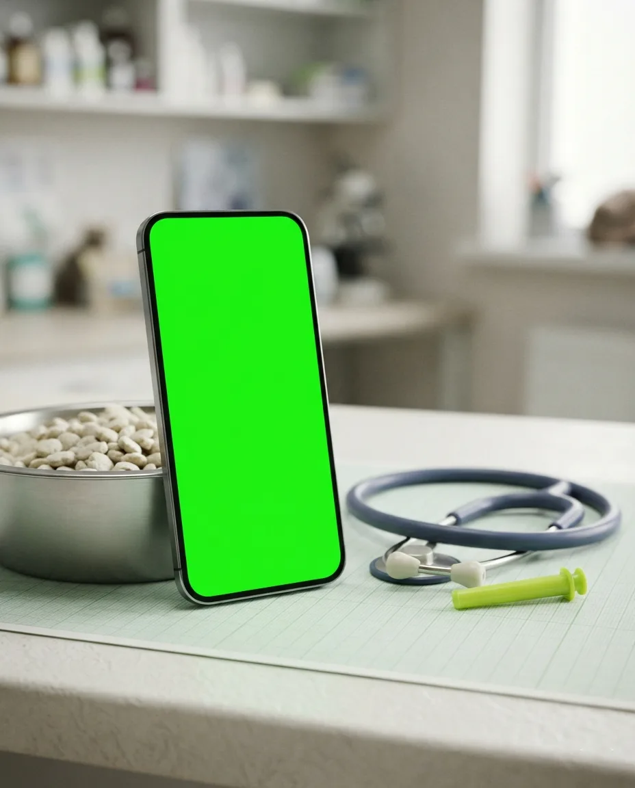
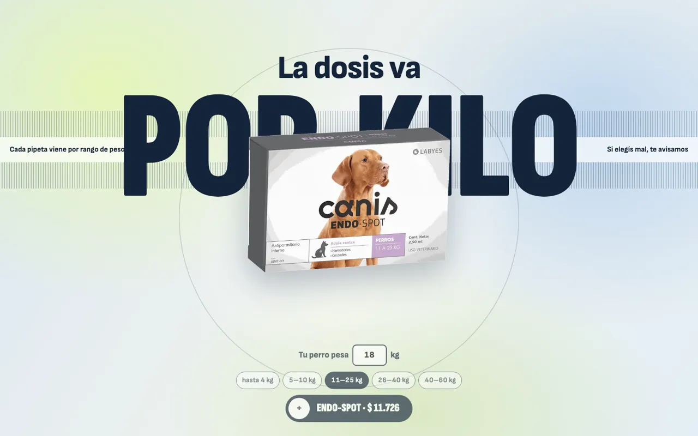
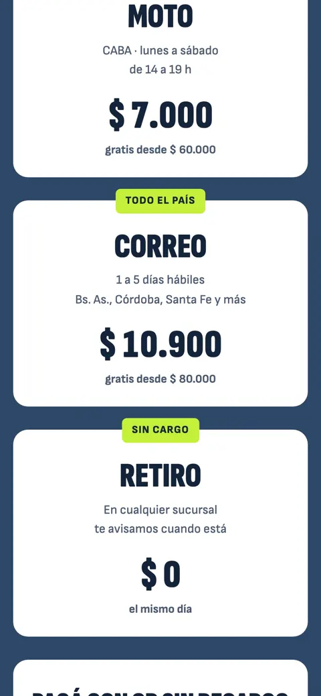
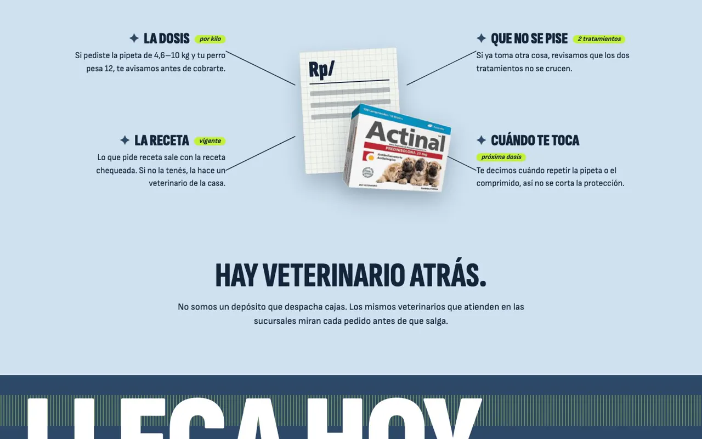
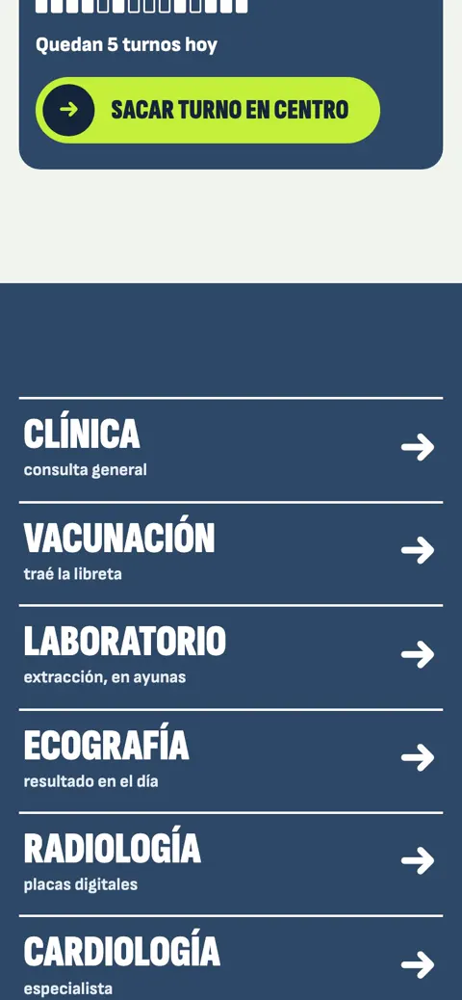
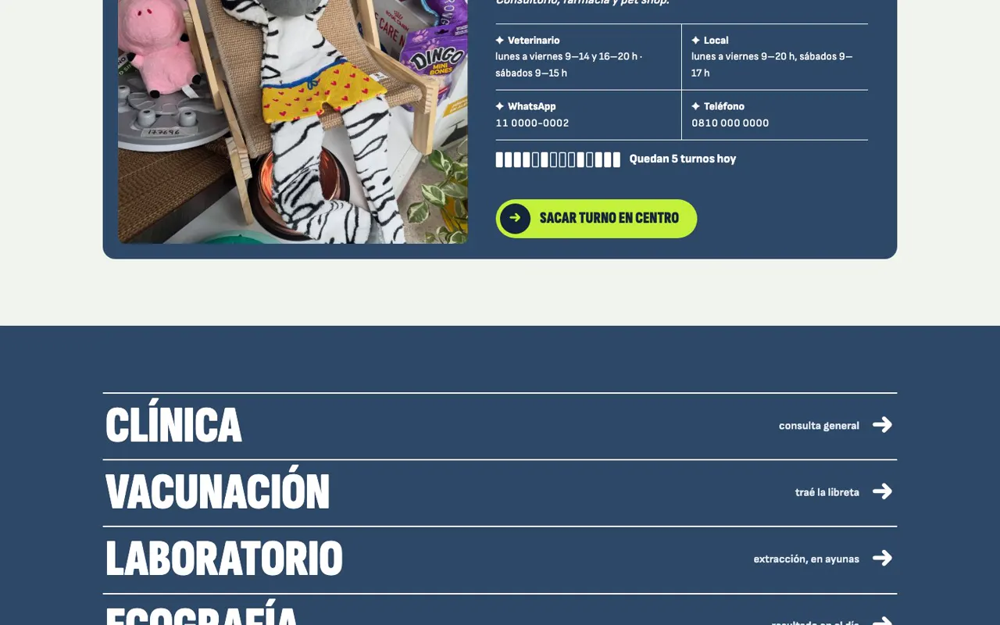

- Concept · not commissioned
- Pets
- 2026
- Site in Spanish
Pet shop.
Orders work like a prescription: dose by weight, checked by a vet. Unbranded version.
Visit the site
What I saw
A pet shop with a vet clinic across two locations, shipping nationwide, with the catalog as the bulk of the site. Orders and vet appointments went down separate paths.
The idea
“There’s a vet behind it.”
The same vets from the stores check every order. So the order works like a prescription: you pick the pet, its weight, and the dose goes by weight. Behind it is a dashboard with orders, appointments and each patient’s file, which flags when the next flea treatment is due.
Inside





How I used AI
| Tool | What for | What I fixed by hand |
|---|---|---|
| Photo cutouts | Thirty-nine product photos from the real catalog, background removed. | No generated photos: they’re their products. |
| Claude Code | Prescription-style ordering, booking with availability, and a five-tab dashboard with each patient’s file. | The 1.3–2.5 kg range was being saved as 13–25: I found it and fixed it. |
| Calculator | For the meeting: how much slips away each month in missed reorders and staff hours, with their own numbers. | It stores the values in the link, so it can be sent afterwards. |
By the numbers
- Products with photos
- 37
- Dashboard tabs
- 5
- Sample patient files
- 8
- Connected flows
- 3
Orders, booking and dashboard share data: what’s ordered on the site shows up in the dashboard.